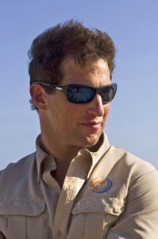

khatumo.net archive
A Bet on Peace for War-Torn Somalia
Published without a byline
May 2, 2013

Michael Stock
MOGADISHU, Somalia— Micheal Stock sees things that others don’t. “Imagine this,” he says one recent afternoon, standing on the sunny second-floor deck of his new oceanside hotel in Somalia’s war-battered capital. “There are banana trees where there’s desert now, and there’s this view.” The banana trees haven’t grown in yet, but International Campus, as he calls the complex, is the closest thing to a Ritz for many miles. A fortified compound sprawled across 11 acres of rocky white beach, it offers 212 rooms including $500-a-night villas, several dining rooms, coffee and snack shops, and a curving slate-colored pool where sun-seekers can loll away Somali afternoons.”It’s going to be ridiculous!” Mr. Stock said, just weeks before residents began arriving for April’s opening.
A few hours later, the jittery sound of gunfire split the warm February air not far from his new hotel—a reminder that the country is still muddling through a decades-old conflict and that there are still bullets flying, bombs detonating. Mr. Stock isn’t just anyone gambling on a far-fetched idea in a conflict zone. In an unusual twist of the war business, the 36-year-old American is deeply involved in the conflict itself. In addition to being a real estate developer, his company also helps train Somalis in modern military techniques.
His security company, Bancroft Global Development, has supported African troops since 2008 as they fought al-Shabaab, the Somali Islamic group tied to al Qaeda, which the U.S. views as a terrorist threat. The United Nations and the African Union, with U.S. State Department money, pay Bancroft to support soldiers in everything from counterinsurgency tactics to bomb disposal, sniper training, road building and, as Mr. Stock puts it, “bandaging shot-off thumbs.”
Security companies have, of course, been rushing into war zones forever, sometimes controversially. A recent congressional study on wartime contracting estimated that the U.S. spent some $206 billion on outside contracts and grants in Iraq and Afghanistan between 2002 and 2011.
Most Western countries have stayed out of Somalia. Contractors like Bancroft partly fill that void. The U.S., which pulled its troops after American soldiers died in the 1993 Black Hawk Down tragedy, has spent more than $650 million since 2006 on supporting the African Union Mission in Somalia, known as Amisom, and its more than 17,000 soldiers.
Unlike many security contractors, Mr. Stock’s company, based in Washington, D.C., is a nonprofit not primarily concerned with making money on military support services. In fact, it actually sustains stretches of multimillion-dollar losses, Mr. Stock says. Meanwhile its sister company, Bancroft Global Investment, chases profits by pouring money into war-zone real estate.
“’Will we get shot at the first day?’ a colleague asked as they flew into Somalia. ‘Probably,’ Mr. Stock laughed.”
“There are infinite possibilities in a country that has to be literally built from the ground up,” said Ken Menkhaus, a Somalia expert at Davidson College. These possibilities, however, also include the worst: a return to a hell-ripped Somalia. That reality loomed only weeks ago when militants bombed the capital’s main courthouse, killing more than two dozen people. Contracting out security has its perils. An investigation by the U.N.’s Monitoring Group on Somalia and Eritrea last summer found companies “operating in an arguably paramilitary fashion.” The investigation found a “growing number” of foreign private security companies working in Somalia with diplomatic missions, international companies and individuals.
According to one person familiar with the confidential part of the report and unaffiliated with Bancroft, the report found that Bancroft was “very transparent about the way they operated,” whereas some other companies were “more deceptive.”Mr. Stock has attracted some big-name attention. In November, he flew in Warren Buffett’s son Howard to look at potential agricultural projects—part of Mr. Stock’s interest in creating a farming operation to service his hotels, among other things.
“He was the only one who would bring me into the country,” said Mr. Buffett, who has been involved in philanthropy around the Horn of Africa. Almost monthly, Mr. Stock commutes here from Washington, D.C. This time his “fast plane,” a 10-seat jet, was in the shop so he borrowed a five-seater Cessna in Kenya from a friend. Accompanying him was a new Bancroft recruit. He had been a part of an Army Delta Force squad that chased al Qaeda in Iraq. ”Will we get shot at the first day?” the former soldier asked at one point. ”Probably,” Mr. Stock said, laughing. “I promised you some spice!”
Bancroft says it employs about 200 men around the world. About half work in Somalia. Some have roots in elite military forces including the Navy SEALs, French Foreign Legion and British Special Air Service, the employees say. “It’s like an extreme sport,” says one, Richard Rouget, a South African resident and former French soldier.
The idea for the business came during a summer job in 1998 with the U.S. embassy in Morocco, where Mr. Stock visited a refugee camp in the Sahara ringed by land mines. “Why hasn’t someone shown them how to remove the mines?” he recalls thinking.
A year later, after graduating from Princeton, he started a mine-removal company. “Like a dot-com,” is how Mr. Stock describes the early days. He had no full-time staffers and spent months meeting people in the field. There was only sporadic mine-removal work, for little money, in some of the world’s most unstable places: Mali, Chad, and Iraq.
His family’s wealth helped. His great-grandfather, Lewis Strauss, made tens of millions as partner at the investment firm Kuhn, Loeb & Co. In time, Mr. Stock borrowed some $8 million from different banks and invested about $2 million of his own money. As the U.S. military went after the Taliban in 2002, Mr. Stock’s company landed in Afghanistan and offered services through a local partner, Mine Pro. He invested in the company and built a group to train bomb-detecting dogs and do anything from plumbing to car repair. But his company operated at a loss, he says. It didn’t make money for about two years, the time it took to get his local Afghan partner up to speed and wait for it to win contracts.
A more profit-minded security contractor might have called it quits. Mr. Stock, however, had another idea. “My thinking was that you could lose money on security to bet on development,” he says.
Afghanistan certainly lacked decent, secure accommodation. Initially he built an eight-bedroom compound in Kabul and another, bigger residence in Herat, the country’s third-largest city. He started a car rental service, too.
Eventually, security began paying off, Mr. Stock says. He started receiving a share of his partner company’s contracts, with that revenue peaking at about $1.8 million in 2005.
But the bigger money was in his properties. Today, the original two have been expanded into protected city blocks of multiple buildings. They house tenants associated with the World Bank and the International Development Law Organization, among others.
Over the past eight years, the real estate and other commercial services like car rental in Afghanistan have brought in about $32 million in net revenue, according to financial documents provided by Bancroft. Much of that money is now being invested in Somalia.
“It was like Stalingrad in 1942,” Mr. Stock says of the day in late 2007 when he flew into Mogadishu. The city was a smoky battlefield of bomb explosions and firefights between the Shabaab and the African troops, who had arrived earlier in the year.
But that was the point, he says. “We wanted get in at the worst time, when it’s really bad.”
The Shabaab, Arabic for “The Youth,” had taken over much of the capital. They built power over years, though the bloodshed had begun long before, in 1991, when armed clans forced out Somalia’s military-run government.
His team set up tents at the airport and struck a deal with the African troops, he says. “We said we’ll help you, if you keep us from getting killed.”Some worry that contractors like Bancroft face little scrutiny—an issue of “accountability,” as one Western intelligence analyst put it. “Who works for them?” he said. “What are they doing?”"The pro side,” he said, “is that they were here when no one else would come.”
A person familiar with the U.S. State Department’s policy on Somalia said that the company had helped create an “effective fighting force.” A U.N. official, meanwhile, noted that Bancroft’s training in roadside bombs had reduced deaths among African soldiers.Mr. Stock winces at the terms “mercenary” and “hired guns,” which he considers inaccurate. He calls his men “mentors” who train people rather than fight.Even though they don’t carry weapons, working closely with soldiers, medics and others means that they are in the line of fire. “If the African forces are overrun, we’re all dead,” he says.Dressed in body armor and a helmet one morning, Mr. Stock says he had never considered joining the military himself. “I don’t take orders well,” he joked, riding along in a convoy of armored carriers in downtown Mogadishu, gunners manning the roof hatches. It was part of a sweep Burundi and Somali soldiers for insurgents.
The streets alternated between bombed-out buildings and stretches of fresh paint. Soon, a sniper was spotted. Later, a gunfight broke out. Then, an exploded roadside bomb brought the convoy to a halt. By the end, six suspected militants were detained and Bancroft took the bomb for analysis.
“Danger comes and goes quickly here,” says Mr. Stock. “It’s like lightning. If it hits, it hits.”
It was nearly three years of free security training in Somalia, and $6 million out of pocket, according to financial filings, before he landed his first contract with the U.N. Various U.N. agencies have paid the company some $15 million since then and the African Union, with the U.S. State Department money, will have paid Bancroft a total of about $25 million by the end of the year.
All along, though, he expanded into real estate. In 2011, he created the for-profit side of the company, Bancroft Global Investment. That year, he sold an 18% stake, just under $1 million, in the Somali properties to a Washington, D.C., developer, Michael Darby.
“When you hear Somalia, you think of the most dangerous place on earth,” says Mr. Darby. “But I’m prone to take more risks than others.”
Making real-estate deals in Somalia wasn’t easy, Mr. Stock says. It took “dozens” of meetings with government officials, clan leaders and neighbors of the properties. “You have to spend a lot of time figuring out who is who,” he says. There is no formal contract for the land, but rather “consensus building,” he says, that results in a verbal go-ahead from the collective parties.
Mr. Stock made a similar land deal, a public-private partnership with the Somali government for some beach property near the port, but didn’t work out as well.
After constructing a facility there and managing it as a residence for the United Arab Emirates, the U.A.E. opened talks with the Somali government about a renewed diplomatic relationship—and sought direct control over the property.
Bancroft ceded its rights to the property to the U.A.E., according to a letter describing the handover and making it official. While Mr. Stock recovered most of his roughly $6 million in construction costs, the deal didn’t exactly work out to his financial advantage, he says. “There’s no magic formula.”
International Campus, which he says cost more than $6 million, is now open for business and mostly booked. Beyond the pool and the ocean views, there is a bunker, a trauma hospital and something akin to Mad Max’s version of an auto body shop, where specialized gear heads will fix “the ballistic glass on your armored vehicle,” as Mr. Stock puts it.
He expects the new place to break even next year. The trailer park, he says, is grossing about $2 million a year. When his cement-making business opens up, there is an entire city to patch and restore.
Still, his work in Somalia is far from assured. The Shabaab remains unpredictable. Weeks ago, militants exploded a car bomb near the presidential palace and before that they struck a beachside restaurant.
But Mr. Stock says he’s in for the long haul. “We’re betting on peace,” he says. He is betting on hotels and perhaps houses in the future.
“Picture this,” he says later, standing near an expanse of mostly empty beach, stretching as far as the eye can see. “You could have a development based around a town center, like the golf resorts in the Midwest.”
Write to Christopher S. Stewart at christopher.stewart@wsj.com